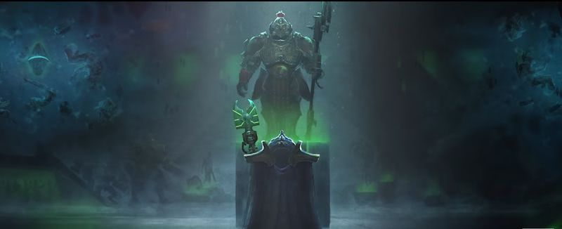

Trayzn the infinite is a fictional character from the setting Warhammer 40,000, he is from an alien race known as the necrons. An immortal race of intelligent robots (really the best way to put it). he is known as a collector of artifacts throughout the galaxy and for just being a little prick, but a funny one at that.
Trayzn has had countless times where it could qualify his best moments, he himself is a rich character with tons of personality and character. In a setting like Warhammer,Trazyn himself makes the setting that much more entertaining. These are what I would qualify as some of his best moments.
Writing a love letter to people who despise him.
Context; Trayzn owns a museum the size of a literal planet, holding all kinds of artifacts living and material, such as helmets or old relics, as well as different races/species including but not limited to humans, aliens, bugs etc. all of which are probably living, anything he finds a significant piece of history. This is during a time where humans attempted to infiltrate his museum to rescue other humans but failed.
“Dear Lady, let me express my fulsome appreciation for your most generous gift. It is so very rare to discover another of my own kind that appreciates my work, therefore to find understanding amongst a member of another race is nothing short of a revelation. I realize that you briefly trod my galleries, but the fact that you spotted in such a short time that my Acabrius War collection was lacking three regiments of Catachan warriors reveals that you truly have a collector's eye for detail. And to send five regiments! Such generosity will allow me to weed out and replace a few of the more substandard pieces in my collection. If I might level a minor criticism, the instructions issued to your gift were manifestly not as clear as you thought, as most of them had to be forcibly restrained. Sadly it seems that the lower orders will always behave like an army of invasion, whether that be their purpose or not. However, this is a minor complaint and seems almost churlish under the circumstances, so please allow me to repay your gift with one of my own. Accompanying this message is the Hyperstone Maze, one of a series of Tesseract Labyrinths constructed at the height of the Charnovokh Dynasty. It is a trinket really, only of interest to scholars such as you and I, but I trust you will find it amusing; assuming you have the wit to escape its clutches, of course.”
Trayzn casually flipping off a friend in court
Context; Trayzn is in court facing theft against his friend, while court is going on he casually looks over and flips him off.
Trazyn flashed the Sign of Vokk, a metaphysically obscene gesture that, in simple terms, indicated that Trazyn hoped the Diviner would – in all timelines and dimensions – come to a brutal and humiliating end. Orikan flashed it back, and Trazyn gave a low chuckle.
A very pissed Trayzn shoots a friend in the face knowing full well his friend will just revive and continue his day.
Context: only some Necrons are immortal and very few know how to do it, the friend Trayzn shoots is one of those necrons. This is pretty much the equivalent of undoing someone's velcro shoes, it doesn't take long and it's not that annoying, but you now have to bend down and strap it again. That is pretty much the equivalent of this moment.
Orikan had just turned the corner when he saw the deathmark step out of the hyperspace oubliette. Its long, deadly form slid from the pocket dimension where it had waited for him. Dead Gods knew how long. It leveled a long synaptic disintegrator, the glow from the viridian bulbs lighting the one-eyed killer’s face as its death mask ran like wax and solidified into Trazyn’s features. ‘Really, Trazyn,’ the Diviner sniffed. ‘Have you sunk to base assass-’ The disintegrator shot punched through Orikan’s big central ocular, its balefire howling through his cranial structure like a sandstorm through a ruined temple. Emerald flames burst from his mouth, his shattered ocular, ringed his head like a crown. His necrodermis blackened. Orikan dropped, hands clawing, fingers starting to phase, eaten by glow-worms of portal light. His charred skull crunched as he spoke. ‘I… don’t… have… the Mysterious.’ ‘You can keep it,’ said Trazyn, stepping back into the hyperspace oubliette.
Trayzn is a collector. He finds things throughout the galaxy that he finds have a significant role in the galaxy's history, and those “things' ' vary from old artifacts of pots to whole living armies stuck in stasis. It spans quite far.
His hobbies consist of stealing things, places, and people.